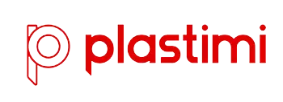

Descubre el lugar ideal para tu empresa en el Parque Industrial y de la Innovación Posadas
¡Únete a la revolución!
Radicate
El Parque Industrial y de la Innovación de Posadas (PIIP) es un espacio destinado a promover el desarrollo de actividades productivas con generación de empleo genuino, apostando a un cambio de la matriz productiva, basado en la innovación y la industria del conocimiento, la economía sustentable y la competitividad empresarial. Estamos en la ciudad de Posadas, Paraje Nemesio Parma. En la confluencia del arroyo Apepú y el Río Paraná lindante al predio del nuevo puerto conformando la denominada Plataforma Logística Productiva. Posee una superficie de 112 hectáreas, accesible desde la Ruta Nacional 12 a través de una avenida asfaltada de 7 km de recorrido. El PIIP se encuentra inscripto en el Registro Nacional de Parques Industriales del Ministerio de Producción de la Nación. Nº de Registro 20130080. También integra la Federación Argentina de Parques Industriales, dependiente de la Confederación Argentina de la Mediana Empresa (CAME)
Descubre los proyectos actuales y futuros del PIIP, ¡entra y conoce nuestro plan de innovación en acción!
ProyectosDescubre las oportunidades laborales en las empresas del parque industrial
Ofertas